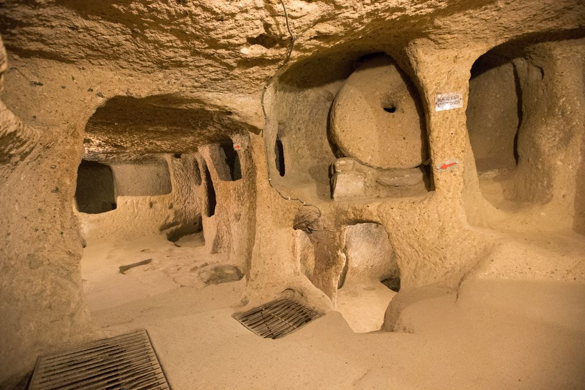
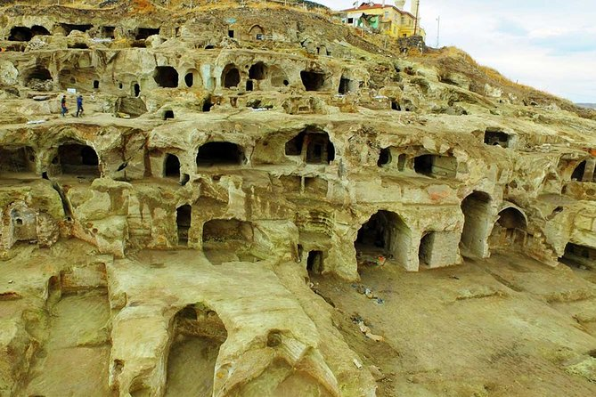

Підземне місто Деринкую.
Місце розташування.
Підземне місто Деринкую розташоване в турецькій провінції Невхешир в районі Денрінкую і є наймасштабнішим підземним містом з усіх виявлених на даний момент підземних міст Каппадокії.
Підземне місто будували в VI—Х століттях. Зараз для вільного доступу відкрито лише 10 % території. У місті є кімнати, вентиляційні труби, каплиці й колодязі. Вниз веде тунель висотою 160—170 метрів. По боках від тунелю розташовані порожні камери.
Дерінкую — одне з 50 підземних міст Каппадокії.
- площа близько 4×4 км
- глибина - приблизно 55 м під землю.
- місто має близько 20 поверхів(досліджено лише 8)
- Вважається, що в Дерінкую могло одночасно проживати до 50 тисяч людей.
Перші жителі Дерінкую відносяться до ассирійських колоній. II. Перші християни, які втекли від переслідувань Римської імперії в 16 столітті, прибули до Каппадокії через Антакью і Кайсері і оселилися тут. Перші християни, які заснували підземні міста в регіоні, змогли втекти від переслідувань римських солдатів, сховавшись у цих містах, вхід до яких було важко помітити. Оскільки їм, можливо, доведеться довго жити в підземних містах, не виходячи на вулицю, вони розширювали свої території, будуючи продовольчі склади, вентиляційні шахти, виноробні, церкви, монастирі, колодязі, туалети та кімнати для зустрічей. У цих містах, які складаються із з’єднаних між собою кімнат, деякі кімнати з’єднані одна з одною тунелями, досить вузькими, щоб пройти лише одна людина. На входах і виходах з тунелів з міркувань безпеки встановлені великі кам’яні циліндри, які використовуються для закриття тунелю.
Повітрям місто насичують 52 вентиляційні шахти, тому навіть на нижніх рівнях дихати легко. Воду отримували з тих самих шахт, оскільки, йдучи на глибину до 85 м, вони досягали ґрунтових вод та служили колодязями. Температура в місті тримається +13 — +15 °C. Усі зали та тунелі досить добре освітлені. На перших поверхах міста розташовували місця хрещення, місіонерські школи, склади, кухні, їдальні та спальні кімнати, хліви для тварин і винні льохи. На третьому і четвертому поверхах — збройові склади. Тут же знаходилися церкви і храми, майстерні тощо. На восьмому поверсі — «Конференц-зал».
Життя в місті
Досі немає єдиної думки щодо використання підземного міста. Одні стверджують, що жителі підземного міста виходили на поверхню тільки для обробітки ланів. Інші вважають, що люди жили в наземному селищі і ховалися під землю тільки під час набігів. У будь-якому разі місто має безліч потайних ходів (близько 600), які мали вихід на поверхню в різних місцях, у тому числі, і в наземні хатини.
Мешканці Дерінкую також подбали про те, щоб максимально захистити місто від проникнення загарбників. У разі небезпеки ходи завалювали величезними валунами, зрушити які могли тільки зсередини дві людини. Навіть якби загарбники якимось неймовірним чином змогли потрапити на перші поверхи міста, систему продумали так, що входи на нижні поверхи намертво блокували. Окрім того, не знаючи міста, загарбники просто заблукали б у цих нескінченних лабіринтах, так і не зумівши вибратися назовні, тоді як населення могло спокійно перечекати навалу на нижніх поверхах або вибратися на поверхню в інших місцях: наприклад, у такому ж підземному місті Каймакли , до якого вів підземний 9-кілометровий тунель.
Створити місто у скелі люди змогли завдяки надзвичайним властивостям туфів: вони добре піддаються обробці, а під впливом повітря набувають величезної міцності. Тому протягом століть люди використовували цю унікальну природну особливість Каппадокії для створення печерних жител або підземних міст.
У Дерінкую вирувало активне життя аж до VIII століття. Потім місто довгі століття було в забутті, практично втрачене, поки його випадково не виявили 1963 року. Місцеві фермери, не розуміючи справжню цінність знайденого, використовували ці добре вентильовані приміщення як склади для зберігання овочів, допоки місто не дослідили і не стали використовувати для туризму
Галерея.

- 
- 